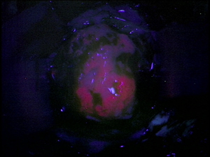
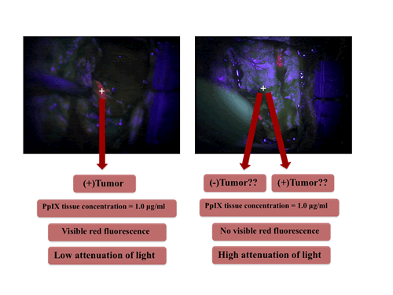
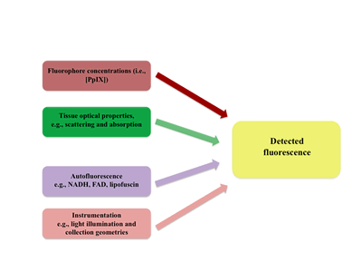
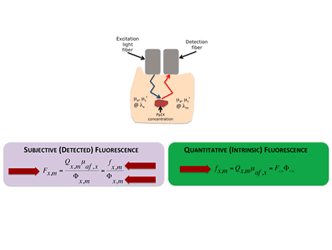

Fluorescence Guided Resection
Fluorescence Guided Resection @ Dartmouth
Qualitative Fluorescence Guided Resection:
Lessons learned using a modified surgical microscope for fluorescence imaging
Our initial experiences, comparable to those of Stummer and colleagues, showed the utility of ALA-induced PpIX for fluorescence guided resection of brain tumors. We have seen that when tissue displays visible red fluorescence following exogenous ALA administration and using the Zeiss Pentero microscope modified to detect PpIX fluorescence, that visible fluorescence was highly predictive of tumor tissue, with a positive predictive value of 0.95 – that is, the probability that positively fluorescent tissue is a true positive for tumor tissue. This high predictive value of visible fluorescence for tumor tissue helps explain the excitement in the field for this technology.
Nevertheless, we also observed that ALA-induced PpIX (using the Pentero microscope) displayed low sensitivity for tumor tissue, with a negative predictive value of 0.26 – that is, the probability that tissue not displaying observable fluorescence is a true negative for the presence of tumors cells. That is, the current state of the art in FGR intraoperative, commercial technologies showed limitations in its sensitivity for detecting tumor tissue using the ALA-induced PpIX fluorescence contrast mechanism.
The second major lesson learned, was the apparent differential trends in PpIX fluorescence as a function of tumor aggressiveness, as assessed from histopathological measures of tumor aggressiveness and presence of tumor cells in tissue. That is, we observed a differential accumulation of PpIX in tissues, suggesting that PpIX is not just an all or nothing process, but that it might accumulate in a differential manner, and that we might be able to detect this differential accumulation of PpIX in tissues.
A third lessons from this work has informed us regarding the ability of current fluorescence imaging approaches to detect fluorescent lesions deep in tissue. We observed that during surgical resection, a think layer of blood was sufficient to not allow the surgeon to observe fluorescing tissue at depth. That is, current fluorescence imaging does not resolve fluorescence at depth. (Roberts et al, Journal of Neurosurgery; Valdes et al Stereotactic and Functional Neurosurgery).
Current Work in Fluorescence Guided Resection:
To address the current limitations in fluorescence guided resection, our group is currently actively engaged, but not limited, in the following work:
A. Quantitative Fluorescence Guided Resection
What we currently observe using the state of the art surgical microscope is the following. We notice that when tissue displays visible red fluorescence, it is positive for the presence of tumor with exquisite predictability. But, in numerous instances, tissue will not display visible fluorescence, and we cannot say with a high degree of confidence whether it is tumor or not based on fluorescence alone.
Thus, one of the greatest limitations of this visible approach is that it suffers from sensitivity issues. In instances where tissue does not display visible red fluorescence – tissue can still contain significant amounts of tumors cells
Furthermore, other tumors, specifically low-grade gliomas, are reported to not display visible fluorescence at all and as such to be undetectable with this technology.
This means that even in the tumor type were FGR works great on – high grade gliomas – FGR still suffers from sensitive issues. Furthermore, this would argue that whole tumor types, specifically low-grade gliomas where the impact on patient survival can be profound – are not amenable to FGR.
Subjectivity of current fluorescence imaging
Now, state of the art detection for FGR uses a surgical microscope with a modification for fluorescence imaging. It is equipped with an adequate excitation light source and appropriate filters for collection of fluorescence emissions, which are subsequently recorded on a CCD. But, with such a set up why are we still missing significant amounts of tumor? Why could that be?
Lets compare two regions of tissue from our Figure shown on the left. We can have two hypothetical regions with ~ equal amounts of the fluorescent biomarker PpIX. Yet, region A (on the left) will have significantly lower attenuation of light signals (e.g., lower absorption, scattering) than region B (on the right) which has higher attenuation. Subsequently region A shows visible fluorescence, and region B does not show visible fluorescence.
Factors affecting the detected fluorescence
This example illustrates the fact that there are several major factors which affect the detected fluorescence; that is, the visible fluorescence, of which the distorting effects of tissue optical properties is one of the most important ones.
The first obvious factor is the levels of fluorophore present. Ideally, the relationship between fluorophore concentration and detected fluorescence would be linear. We know, from work in the field of biomedical optics, that other factors affect the levels of detected fluorescence (Figure shown below) . These include:

1. First, and the most obvious, are the actual levels of the fluorophore of interest, which, in our case, is PpIX.
2. Tissue optical properties which impact the attenuation of light both coming in to excite the fluorophore and that coming out to the detector
3. Autofluorescence naturally found in tissue, which can be non-specific and have an impact on the S/N ratio
4. Instrumentation details, such as the light illumination and collection geometries.
One of the major problems with current low sensitivities using state of the art detection technologies for FGR is that they do not account for these confounding factors. Furthermore, by not taking into account the distorting effects of tissue optical properties on the emitted fluorescence, current approaches for FGR are qualitative at best and highly prone to subjectivity.
Quantitative fluorescence guided resection
The Brain Research Group @ Dartmouth is currently working on quantitative fluorescence detection, which takes into account these variations in tissue optical properties and their effects on the detected fluorescence. Using a quantitative approach, we can then determine the quantitative or intrinsic fluorescence in tissue, which is linearly related to the actual levels of fluorophore in tissue – irrespective of tissue optical properties - and subsequently, the absolute levels of PpIX in tissue (Figure shown below to the right ).
Briefly, the detected and uncorrected fluorescence, Fxm, is a function of both the intrinsic fluorescence, fxm, due only to fluorophore concentrations and an attenuation factor, Fxm, which results from signal attenuation due to variations in tissue optical properties. The greater the attenuation, the smaller the detected fluorescence and vice versa. This is because light will be attenuated as it goes into the tissue at excitation and then as it exits the tissue during fluorescence emission.
One can imagine that if we are able to quantify or account for that attenuation factor, Fxm, we can then quantify the intrinsic fluorescence in tissue, fxm, which is linearly related to the concentration of biomarker.
We have used a spectroscopic device developed at the University of Toronto by Drs. Brian Wilson and Anthony Kim (Kim et al, Optics Express, 2010), which determines the tissue optical properties by interrogating tissue with white light to collect the white light reflectance. The white reflectance is then fit to a spectrally constrained, diffusion model of the diffuse reflectance, by minimizing the error between probe measurements and the spectrally constrained model of the diffuse reflectance. From this we are then able to estimate the tissue optical properties; that is, the attenuation factor, Fxm.
These same tissue optical properties were then used to correct the detected fluorescence spectra and calculate an intrinsic, quantitative fluorescence – that is a fluorescence corrected for attenuation effects. Once we have determined an instrinc fluorescence spectrum, we are able to perform spectral unmixing and calculate the contribution of different fluorescence components; specifically, in our case, the contribution of PpIX, and as such, the absolute concentration of this biomarker found in tissue (Kim et al, Journal of Biomedical Optics, 2010; Valdes et al, Journal of Neurosurgery, 2011).
In our initial experience using a quantitative FGR approach, our group has observed high statistically significant improvement (p <0.001) in detection accuracies for our quantitative FGR approach compared to the qualitative, visible fluorescence approach across a broad range of tumors histologies, including low-grade gliomas, high-grade gliomas, meningiomas, and meta states (Valdes et al, Journal of Neurosurgery, 2011). In summary, we have shown that PpIX is a broad targeting biomarker.
More specifically, our results lead us to the following conclusions:
1) First, a quantitative approach for assessment of PpIX fluorescence is significantly more accurate than a qualitative, subjective approach using the state of the art in FGR.
2) Second, we found that our quantitative approach for FGR demonstrates that PpIX is a broad targeting biomarker for brain tumors, beyond just high-grade gliomas alone into low-grade gliomas, meningiomas and metastases.
3) Third, low-grade gliomas, which were previously thought to be undetected using ALA-induced PpIX, show significant, diagnostic levels of PpIX using our quantitative approach, with a diagnostic performance comparable to that of high-grade gliomas with visible fluorescence imaging.
That is, we have seen that using a quantitative approach we are taking full advantage of the biomarker targeting capabilities of PpIX.
References
- Link to Publication
Whitson W, Valdes PA, Harris BT, Paulsen KD, Roberts DW. Confocal microscopy for the histologic fluorescence pattern of a recurrent atypical meningioma. (Neurosurgery. 2011 [Epub Mar 8]) - Link to Publication
Valdes PA, Leblond F, Kim A, Harris BT, Wilson BC, Fan X, Tosteson T, Hartov A, Ji S, Paulsen KD, Roberts DW. Quantitative fluorescence in intracranial tumor: implications for ALA-induced PpIX as a surgical biomarker to guide resection procedures. (J Neurosurg. 2011. [Epub Mar 25])- Accompanying editorial:
Editorial: Ikeda D, Chiocca EA. Measuring versus seeing.
Response: Roberts DW, Valdes PA, Leblond F, Kim A, Harris BT, Wilson BC, Fan X, Tosteson T, Hartov A, Ji S, Paulsen KD. (J Neurosurg. 2011. [Epub Mar 25])
- Accompanying editorial:
- Link to Publication
Roberts DW, Valdes PA, Harris BT, Fontaine KM, Hartov A, Fan X, Ji S, Lollis SS, Pogue BW, Leblond F, Tosteson T, Wilson BC, Paulsen KD. Co-registered Fluorescence-Enhanced Tumor Resection of Malignant Glioma: Relationships between ALA-Induced PpIX Fluorescence, MRI Enhancement and Neuropathological Parameters. (J Neurosurg. 2010 Mar;114(3):595-603. Epub 2010 Apr 9)
- Link to Publication
Valdes PA, Fan X, Ji S, Harris BT, Paulsen KD, Roberts, DW. Estimation of Brain Deformation for Volumetric Image Updating in Protoporphyrin IX Fluorescence-Guided Resection. (Stereotactic and Functional Neurosurgery, 2009 Nov 12;88(1):1-10. [Epub 2009 Nov 12])
- Link to Publication
Kim A, Roy M, Dadani F, Wilson BC. A fiberoptic reflectance probe with multiple source-collector separations to increase the dynamic range of derived tissue optical absorption and scattering coefficients. (Opt Express. 2010 Mar 15;18(6):5580-94) - Link to Publication
Kim A, Khurana M, Moriyama Y, Wilson BC. Quantification of in vivo fluorescence decoupled from the effects of tissue optical properties using fiber-optic spectroscopy measurements. (J Biomed Opt. 2010 Nov-Dec;15(6):067006)